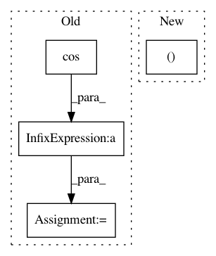

62aa97cee99d3ab2faf1efda1f55238370e767cd,epicycles.py,EclipticPoleWindow,idle_cb,#EclipticPoleWindow#,114
Before Change
dist = p.earth_distance
dist_scale = halfheight * dist / self.auscale
x = dist_scale * math.cos(ra) + halfwidth
y = dist_scale * math.sin(ra) + halfheight
if self.planet_paths[i]:
ctx.set_source_rgb(*color_to_triplet(self.planet_colors[i]))
ctx.new_path()
After Change
ctx.stroke()
ctx.close_path()
self.planet_paths[i].append((ra, dist))
// Returning True reschedules the timeout.
return self.stepping
In pattern: SUPERPATTERN
Frequency: 3
Non-data size: 4
Instances
Project Name: akkana/scripts
Commit Name: 62aa97cee99d3ab2faf1efda1f55238370e767cd
Time: 2020-03-01
Author: akkana@shallowsky.com
File Name: epicycles.py
Class Name: EclipticPoleWindow
Method Name: idle_cb
Project Name: mariogeiger/se3cnn
Commit Name: b41bf85906c38c8e50059f684a0fd3408a0c20fb
Time: 2019-08-02
Author: benmiller1315@gmail.com
File Name: se3cnn/util/plot.py
Class Name:
Method Name: spherical_surface
Project Name: mariogeiger/se3cnn
Commit Name: 23bb353a6ab85d7ea03c06a2ccfa7d91e2f078d3
Time: 2019-08-05
Author: geiger.mario@gmail.com
File Name: se3cnn/util/plot.py
Class Name:
Method Name: plotly_sphere